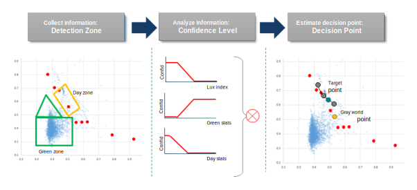

| AWB scene analyzers | |
AWB processing estimates the illuminant in a given scene and computes the RGB gain to adjust the white balance of the image. Even though AWB processing has modules such as weight vector and misleading color zone, it is helpful to have an advanced module that can adjust the decision based on real life scene detection in corner cases. The Generalized Scene Analyzer module was designed for this need by providing tuning flexibility for scene detection, confidence control, and decision adjustment. Each individual scene analyzer (SA) analyzes a given scene based on configurable items, such as brightness of scene or the stats count from the detection zone. Each SA is tuned to improve performance in a given scene while avoiding side effects on other scenes.
An SA is defined to detect a specific set of scene characteristics. For example, you can define an SA to detect an "outdoor green scene" that is very bright (based on lux index) and has a higher ratio of green stats (from green grass). If a scene is a good match to the defined characteristics, the SA estimates the illuminant to be outdoor sunlight and adjusts the AWB decision based on this assumption. The SA also computes a confidence level that indicates how well the scene matches the defined characteristics. Then based on the scene detection results and confidence level, the SA estimates the illuminant and adjusts the AWB decision.
The following diagram shows the SA process of collecting data in the detection zones, analyzing that data to assign confidence levels, and merging the decision points (weighted by confidence level) to determine a target decision point.
Creating an SA requires careful advanced planning. For example, consider the image on the left as an example of an outdoor green scene that can be improved with a scene analyzer.
Each SA has at least one Detection Zone and each zone is assigned to an AWB Zone Group. A zone group can be made up of one or more detection zones. For example, two detection zones can be defined to cover the green stats area and they can both be assigned to a single zone group. Within an SA, there can be up to four zone groups.
The following figure illustrates the Detection Zone Type (shape) options that can be used to define a detection zone.
The SA enables a detection zone shape based on the triggers defined for the detection zone. The following figure from the Chromatix tool shows the parameter values for a rectangular detection zone named Yellowish Green Detect. The only trigger available for any detection zone is Lux Index. The example shows two trigger ranges: {0, 153} and {230, 354} in the first column. The core data to the right of each trigger range represent the vertices that define the zone type/shape.
In this example, if the lux index of the scene is in the range {0, 153}, the SA enables a detection zone defined by the core data (orange box). Since the zone type is rectangle, the first two entries of the core data are the vertices that define the rectangular detection zone. SA detection zone triggers follow the common AWB trigger system that provides for interpolation of values that fall outside or between the defined trigger ranges.
The SA collects the stats count and average R/G, B/G ratio from each detection zone group. The collected information is used as the trigger control type in confidence level and decision point adjustment computations.
Each SA has at least one Confidence Level that indicates how well the scene matches the characteristics of the SA. A confidence level of 1.0 means that a given scene matches the predefined characteristics and the Decision Aggregator puts a higher weight on the target point from this SA.
A confidence level is defined by a configurable set of triggers.The following figure illustrates how you can set confidence levels in one or two dimensions.
The following example from the Chromatix tool shows the parameter values for a confidence level defined with a 2-dimensional trigger. Trigger ranges set for the first trigger (CCT) are visible in the first column. Trigger ranges for the second trigger (Zone Group 0 Count Ratio) are visible in the second column. The core data to the right of the trigger values represent the confidence level assigned to an image that meets that criteria. SA confidence level triggers follow the common AWB trigger system that provides for interpolation of values that fall outside or between the defined trigger ranges.
Set the trigger point and confidence level considering a consistent AWB decision and smooth transition. You can control the confidence level more precisely by adding more confidence levels and adding more trigger zones in a confidence level.
Within an SA, there can be up to six confidence levels. A final confidence level is computed by merging all the confidence levels using a configurable computation type (multiply, weighted average, minimum, maximum, type max). The final confidence level indicates how much a given scene matches the SA characteristics.
The target point is the expected AWB decision point if the given scene had a final confidence level of 1.0. As part of the AWB process, the Decision Aggregator merges the target points for all SAs and interpolates them based on their confidence level.
The decision point adjustment is defined by a configurable set of triggers. The following example shows the parameter values for a fixed point type target point. Trigger ranges set for the first trigger (Lux ID) are visible in the first column. Trigger ranges for the second trigger (Zone Group 0 Count Ratio) are visible in the second column. The core data to the right of the trigger values are the coordinates of the fixed decision point or the Rg/Bg gain values assigned to an image that meets the trigger criteria. SA target point triggers follow the common AWB trigger system that provides for interpolation of values that fall outside or between the defined trigger ranges.
For accurate and easy tuning, it is recommended to tune the decision point adjustment for the scene that has 1.0 confidence level first, after disabling all other SAs. In this condition, the decision point is used directly for the final AWB decision point.